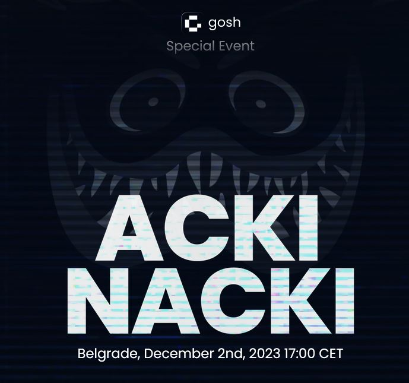

Overview

watch the event here
The use cases enabled by GOSH demand so great an amount of data to be processed, that no blockchain technology today can actually cope with handling it entirely on-chain. Consequently, there is a need for a new blockchain architecture that will allow GOSH to do what cloud computing can do.
We present to your attention the Acki Nacki consensus algorithm, the innovative blockchain design and technology for data exchange and replication. .
It will allow faster finality, more throughput, and higher security than any other blockchain consensus algorithm.
By delivering 3 blocks per second on one thread, with an unlimited number of possible thread, Acki Nacki will be able to support an infinite number of transactions per second with completion in less than 1 second — directly proportional to the amount of computing power available in the world — making it the only true solution for scalability on the blockchain.
The Acki Nack is a multi-core processor that is also self-tuning.
Participants periodically agree on the level of network security they want to achieve by changing its parameters, for example, the number of participants.
And it reacts to these changes and adjusts its properties in accordance with the security guarantees of the entire network.
Roles of participants in the network:
Block Producer - is somebody who takes the transactions received from users, executes them inside the virtual machine, and sends it out to the network.
This operation is quite fast. Now, if the block becomes too big and there are too many people who want to execute, then the block Producer splits the block into another block and another block and delegates the work to another block Producer.
As a result, with a heavy load, there will be a network full of block developers. Each of them will offer smaller fragments of this block.
A Producer of malicious blocks may also appear
Block Keeper - receives blocks and sends confirmation to the network
Sometimes he turns into Verifier of blocks (?) = "Acki Nacki"
Any node can become a Verifier, this is a random value. And for all nodes events I am Verifier are independent.
Verifier (selected based on the formula) are obliged to validate block.
-
if the block is correct, it sends a confirmation (ACK)
-
if the lock is malicious, send a message that the lock has not been confirmed (NACK)
Hence why the protocol is called Acki Nacki
(In the decentralized system, there may be some nodes, which are malicious. The malicious nodes, using spam, disconnect some nodes from the network and perform a Double-Spend attack. To achieve successful consensus some unique BLS signatures of nodes need to be collected. Verification prevents attacks on consensus. If at least one of the surviving honest nodes becomes a verifier, the attack is considered unsuccessful. )
If Verifier do not send ACKI/NACKI, then they will be slashed in the future.
"The network is optimized for optimism"(с)(Mitja)
If a malicious block appears, the network slows down to mitigate the attack and sort itself out, and then continue working.
(????) IGF GBA Triscale Wallacea Trust DeVOTE (?????)
security?
2 algorithms that guarantee network security:
As a result, GOSH will now become the first decentralized operating system for non-financial applications
GOSH is already the 2 Level for Ethereum, but in the future GOSH may become the 2 Level for many blockchains and provide endless scalability to run applications (fast and free).
Acki-Nack Consensus
Each Node obtains block propagates message.
And also Node computes if it is Verified for block
Any node can become a Verifier, this is a random value.
And for all nodes events I am Verifier are independent.
Verifier (selected based on the formula) are obliged to validate block.
If they will not (do not send ACKI/NACKI), then they will be slashed in the future.
Also if they produced incorrect verdict for block, they will be punished too. For good job they will rewarded.
Any node can verify block block (if she wants) too, even if it is not selected.
And she can send ACKI/NACKI.
For incorrect verdict it will be punished.
*But will it get reward per good job as other Verifiers?*
When any node receives a confirmation/NACK for a block, it adds that block to the chain locally.
Validator flou

Mathematical formulas:
The new block producing
The verifiers assigning
The block verification
The block finalization
The block producer election
Slashing
PERFORMANCE ANALYZIS
The crucial feature is that the block producer does not change if everything goes well. Thus, it does not change too often and therefore the protocol does not spend a lot of time re-electing a new block producer and reconfiguring the network
to it
Security. DDOS Attack.
follows that the probability of the successful attack in Ack-Nack consensus approaches zero as the number of confirming blocks tends to infinity.
graphics
proofs L2 for Ethereum
Defenitions
blockchain, consensus, BFT, BLS signature, DDOS attack
Producer of malicious blocks
Block Keepers - all nodes in network who participate in consensus: hold the replicated state, build new blocks, receive messages, check and sign blocks.
Thread is a subset of block keepers that is ..
together with data .. thread does not change from one block
to another
Threads can’t intersect. Threads are like shards in TON
blockchain. The set of keepers servicing the thread can change
(by voting).
Block Producer - one of block keepers who assemble the Bi from
received unhandled messages and broadcast the Bi
to other block keepers.
There is only one block producer in each thread for each
block number.
Verifier of blocks (Acki-Nacki)
Verifiers are those block keepers who are assigned to verify (this is their responsibility and they will be punished if they fail to do so, while the other keepers can check or not check the block as they wish) and broadcast the checking results to all other keepers of current thread.
Block keepers can exchange data of several types:
1) the messages notifying about events (“Event messages”), which in turn are divided into messages about external events “External messages”) and internal events (“In-ternal messages”) regarding the current thread.
2) broadcast protection (BP) messages
3) the blocks